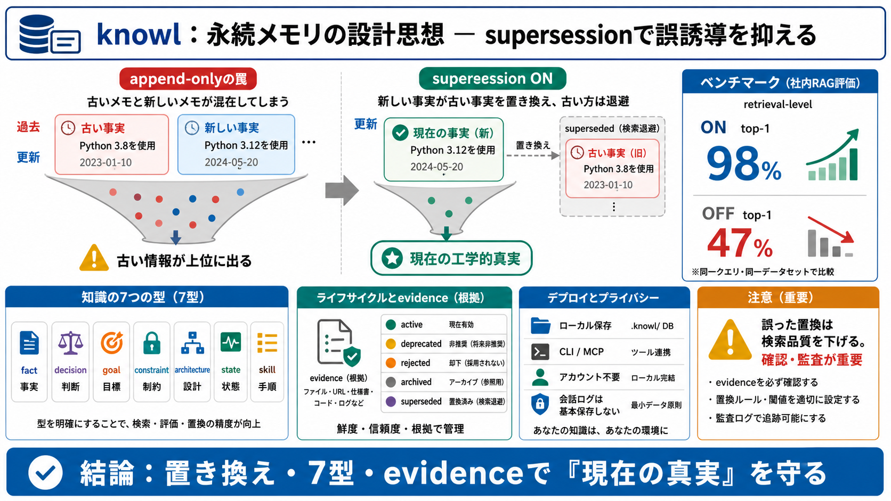

Knowledge Agents - Claude-Mem
MCP Tools HTTP API MCP Tools HTTP API (mcp-server.ts) (worker on :$WORKER_PORT) (mcp-server.ts) (worker on :$WORKER_POR…

MCP Tools HTTP API MCP Tools HTTP API (mcp-server.ts) (worker on :$WORKER_PORT) (mcp-server.ts) (worker on :$WORKER_POR…
in pairwise sorted memories key = lambda x x timestamp if contradicts m1 m2 and m2 timestamp> m1 timestamp return False …
Cross-session identity resolution: The memory model assumes a stable `user_id`. Anonymous sessions, multi-device users, …
interactions, significantly improving consistency, reducing redundant queries, and maintaining a high-fidelity knowledge…
This distillation process significantly improves memory efficiency by: Eliminating verbose back-and-forth elements Pr…